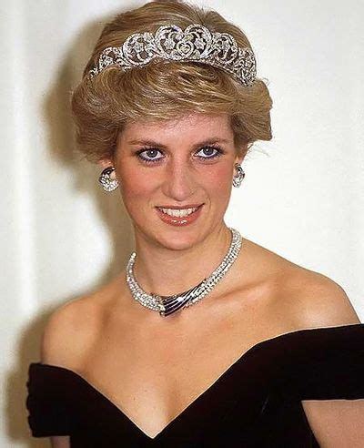
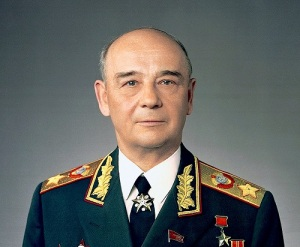
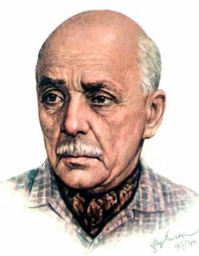
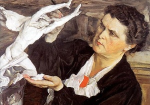
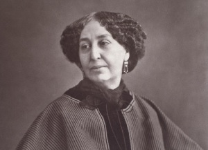
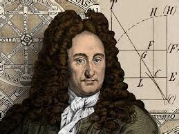
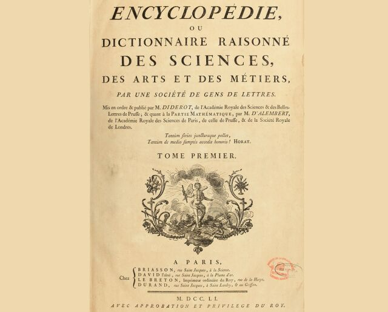

1 июля в отрывном календаре:


Родилась принцесса Уэльская Диана Спенсер
Диана, принцесса Уэльская(урождённая Диана Фрэнсис Спенсер (англ. Diana Frances Spencer)), член Британской королевской семьи, первая жена Чарльза, принца Уэльского (с 8 сентября 2022 года — короля Великобритании Карла III), мать Уильяма, принца Уэльского и принца Гарри, герцога Сассекского.
Родилась Клара Степановна Лучко
российская актриса, народная артистка СССР (1985). Роль Даши Шелест в картине И. А. Пырьева «Кубанские казаки» (1949; Сталинская премия 2-й степени, 1951) сделала Лучко одним из главных лиц советского экрана. Снималась в фильмах С. А. Герасимова, И. Е. Хейфица, Я. Б. Фрида, В. В. Корш-Саблина, С. И. Ростоцкого, Т. М. Лиозновой и др.
Родился Сергей Леонидович Соколов
советский военный деятель, Маршал Советского Союза (1978), Герой Советского Союза (1980). Участник Великой Отечественной войны. Министр обороны СССР (1984–1987).
Родился Павел Григорьевич Антокольский
русский поэт, переводчик, драматург. Наиболее известное произведение – трагическая поэма «Сын» (1943), посвящённая памяти погибшего на войне сына (Гос. пр. СССР, 1946).
Родилась Вера Игнатьевна Мухина
скульптор, нар. худ. СССР (1943), д. чл. АХ СССР (1947). Наиболее известная работа – группа «Рабочий и колхозница», венчавшая павильон СССР на Всемирной выставке 1937 в Париже (нержавеющая сталь, 1935–37; ныне – перед северным входом ВДНХ), ставшая символом СССР.
Основана Российская Государственная библиотека
(19 июня) 1 июля 1862 года император Александр II одобрил «Положение о Московском публичном музеуме и Румянцевском музеуме», которое стало первым юридическим документом, определившим управление, структуру, направления деятельности, штатное расписание Музея.
Это был первый общедоступный музей Москвы (ныне Музей изобразительных искусств имени А.С. Пушкина), в составе которого находилась первая бесплатная публичная библиотека в Первопрестольной. Кроме Библиотеки, этот замечательный культурный центр включал несколько отделений: рукописей, редких книг, христианских и русских древностей, изящных искусств, этнографическое, нумизматическое, археологическое и минералогическое.
Родилась Жорж Санд
Жорж Санд (фр. George Sand, настоящее имя — Амандина Аврора Люсиль Дюпен, фр. Amandine Aurore Lucile Dupin), французская писательница.
Родился Готфрид Лейбниц
немецкий философ, математик, физик, юрист. Независимо от И. Ньютона открыл дифференциальное исчисление и до своей смерти спорил с коллегой о первенстве. Разработал интегральное исчисление. В 1697 году Лейбниц знакомится с Петром I, который в то время путешествовал по Европе. Благодаря плодотворному общению с учёным, русский царь впоследствии одобрил создание Академии наук в Петербурге, что положило начало развитию российской науки по западноевропейскому образцу. В 1700 году Лейбниц основал Прусскую академию наук. Он же стал её первым президентом. Помимо этого он был избран иностранным членом Парижской Академии наук.
Вышел в свет первый том первой в мире «Энциклопедии»
Проект французского справочного издания под названием «Энциклопедия, или толковый словарь наук, искусств и ремёсел» (Encyclopédie ou dictionnaire raisonné des sciences, des arts et des métiers) возник в 1747 году. Его инициатор, парижский книгоиздатель Луи Бретон, обратился тогда к знаменитому философу и писателю-просветителю Дени Дидро с просьбой стать организатором уникального дела. Охотно согласившись, Дидро посвятил «Энциклопедии» 25 лет жизни. Впоследствии его соредактором стал ученый-единомышленник Жан д'Аламбер. Участие в составлении энциклопедии приняли также самые выдающиеся мыслители века Просвещения: Вольтер, Поль Гольбах, Жан-Жак Руссо, Шарль Луи Монтескье, Поль Адриан Гельвеций и другие.
